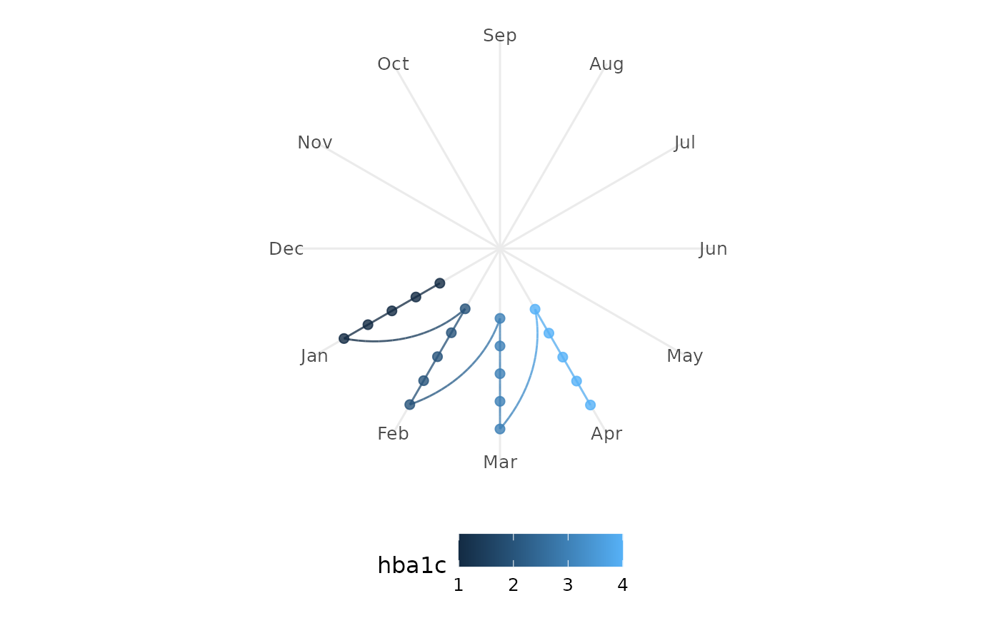

X-scale for periodic longitudinal plots
scale_x_kodom_periodic.RdThis is a convenience wrapper around ggplot2::scale_x_continuous() that
enforces limits = c(0, period) and uses oob = scales::oob_keep.
Arguments
- period
The length of one complete cycle (e.g.
12for months). Must match theperiodargument passed togeom_kodom_periodic(). Default12.- breaks
Passed to
scale_x_continuous(). Default provides integer breaks for the period.- ...
Additional arguments passed to
ggplot2::scale_x_continuous(), such aslabels.
Value
A ggplot2::scale_x_continuous() object.
Details
Why is this necessary? To make exactly one cycle span exactly one
360-degree rotation in coord_polar, the scale limits must be set to the
period length (e.g., c(0, 12)). However, standard ggplot2 scale_x_continuous
will drop any data outside those limits. By setting oob = scales::oob_keep,
we instruct ggplot2 to keep the data that exceeds the period. coord_polar
then natively wraps those out-of-bounds values around the circle, creating
beautiful, continuous Archimedean spirals!
Examples
# \donttest{
library(ggplot2)
df <- data.frame(
subject_id = rep(1:5, each = 4),
time = rep(1:4, 5),
visit_month = rep(1:4, 5),
value = rep(1:4, 5),
hba1c = rep(1:4, 5),
arm = rep(c("Treatment", "Control"), c(12, 8))
)
ggplot(df, aes(x = visit_month, id = subject_id, colour = hba1c)) +
geom_kodom_periodic(period = 12) +
scale_x_kodom_periodic(period = 12, labels = month.abb) +
scale_y_kodom_periodic() +
coord_kodom_periodic() +
theme_kodom_periodic()

# }